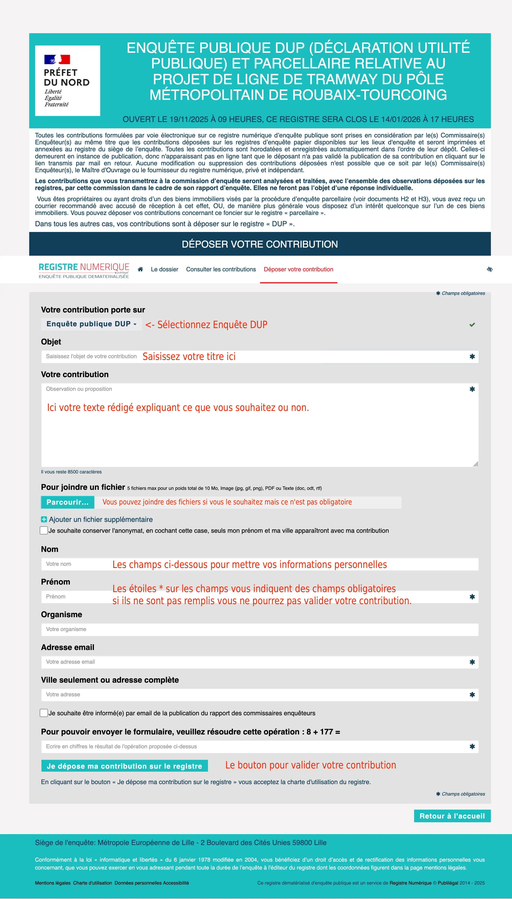

Info sur les rdv avec l’enqueteur
L'enquête publique à démarré le 19 novembre dernier, elle se clôture le 14 janvier 2026.
Les commissaires enquêteurs seront présents à Hem pour des permanences. L’enquêteur n’est pas un technicien, il n’est pas urbaniste… c’est une personne extérieure au projet. Il sera à l’écoute de notre ressentis et de nos arguments.
Si les dates sur Hem ne conviennent pas, il est possible de se rendre aux permanences d'une autre ville (ex, roubaix). Rencontrer l’enquêteur permet de poser des questions concernant les documents mis à disposition (consultable sur place ou sur le site dédié). Vous pouvez déposer vos contributions à l’oral, toutefois, mieux vaut le faire par écrit sur le site afin de ne rien oublier. Préciser le lors de la rencontre.
